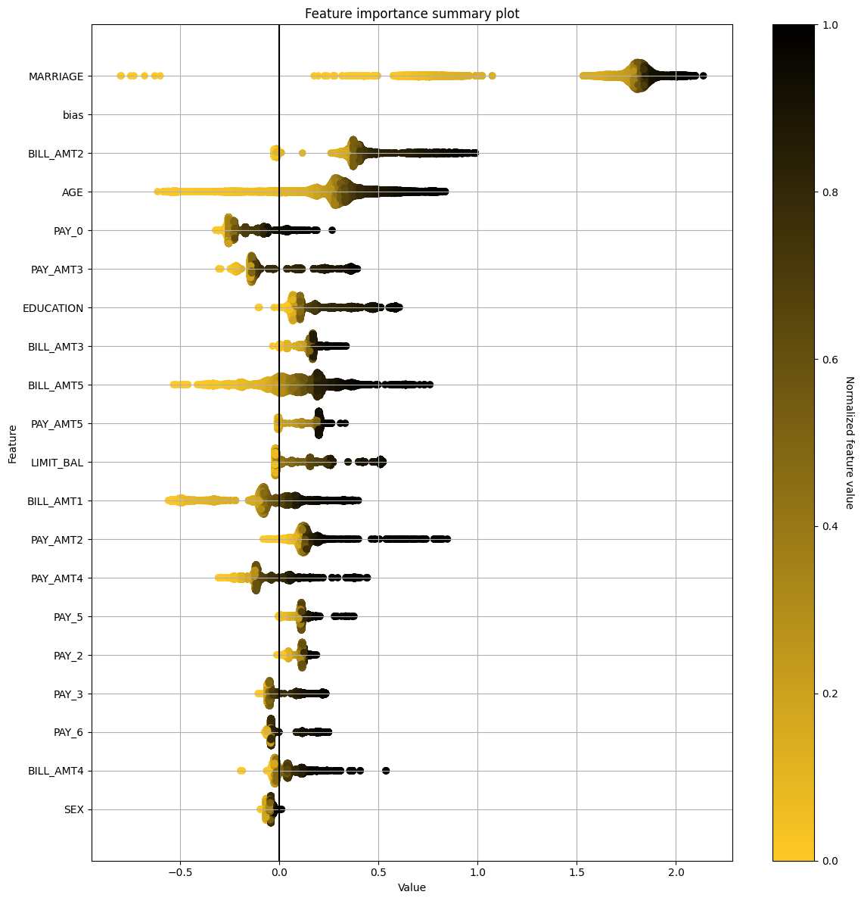
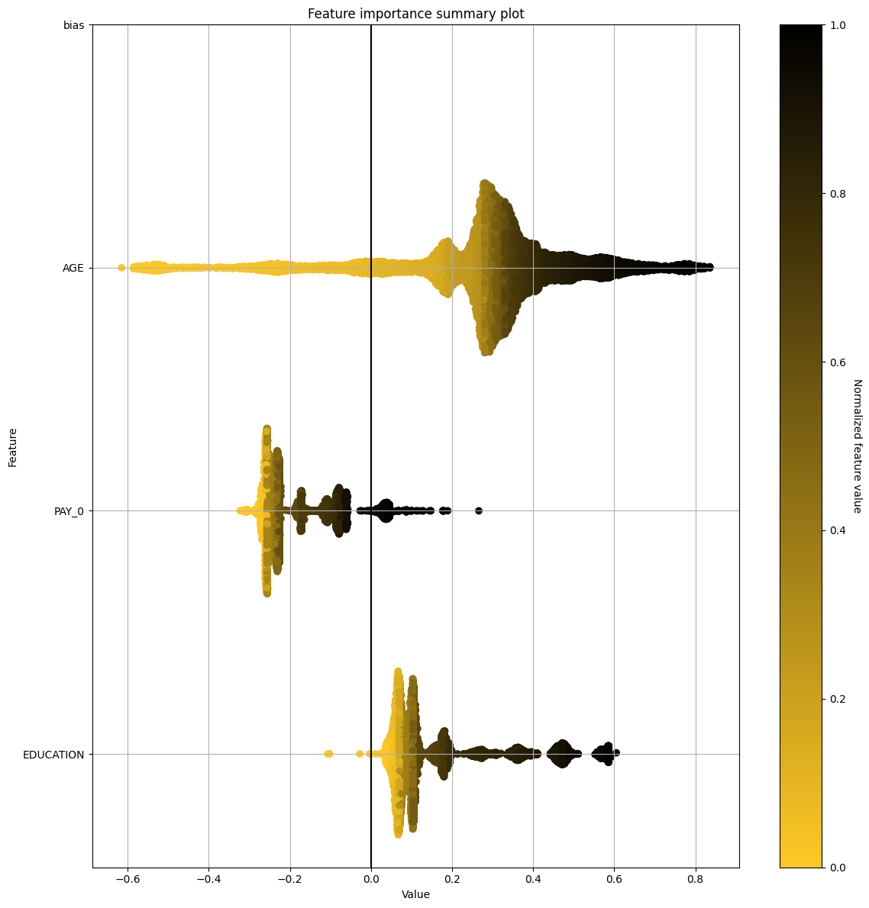

Summary Shapley Explainer Demo
This example demonstrates how to interpret a scikit-learn model using the H2O Sonar library and retrieve the data and plot the summary Shapley.
[1]:
import logging
import pandas
import webbrowser
from h2o_sonar import interpret
from h2o_sonar.lib.api import commons
from h2o_sonar.lib.api import explainers
from h2o_sonar.lib.api.models import ModelApi
from h2o_sonar.explainers.summary_shap_explainer import SummaryShapleyExplainer
from sklearn.ensemble import GradientBoostingClassifier
[2]:
results_location = "../../results"
# dataset
dataset_path = "../../data/predictive/creditcard.csv"
target_col = "default payment next month"
df = pandas.read_csv(dataset_path)
(X, y) = df.drop(target_col, axis=1), df[target_col]
[3]:
# parameters
interpret.describe_explainer(SummaryShapleyExplainer)
[3]:
{'id': 'h2o_sonar.explainers.summary_shap_explainer.SummaryShapleyExplainer',
'name': 'SummaryShapleyExplainer',
'display_name': 'Shapley Summary Plot for Original Features (Kernel SHAP Method)',
'tagline': 'SummaryShapleyExplainer.',
'description': 'Shapley explanations are a technique with credible theoretical support that presents consistent global and local feature contributions.\n\nThe Shapley Summary Plot shows original features versus their local Shapley values on a sample of the dataset. Feature values are binned by Shapley values and the average normalized feature value for each bin is plotted. The legend corresponds to numeric features and maps to their normalized value - yellow is the lowest value and deep orange is the highest. You can also get a scatter plot of the actual numeric features values versus their corresponding Shapley values. Categorical features are shown in grey and do not provide an actual-value scatter plot.\n\nNotes:\n\n* The Shapley Summary Plot only shows original features that are used in the model.\n* The dataset sample size and the number of bins can be updated in the interpretation settings.\n\n',
'brief_description': 'SummaryShapleyExplainer.',
'model_types': ['iid', 'time_series'],
'can_explain': ['regression', 'binomial', 'multinomial'],
'explanation_scopes': ['global_scope'],
'explanations': [{'explanation_type': 'global-summary-feature-importance',
'name': 'GlobalSummaryFeatImpExplanation',
'category': '',
'scope': 'global',
'has_local': '',
'formats': []}],
'keywords': ['run-by-default', 'explains-feature-behavior', 'h2o-sonar'],
'parameters': [{'name': 'max_features',
'description': 'Maximum number of features to be shown in the plot.',
'comment': '',
'type': 'int',
'val': 50,
'predefined': [],
'tags': [],
'min_': 0.0,
'max_': 0.0,
'category': ''},
{'name': 'sample_size',
'description': 'Sample size.',
'comment': '',
'type': 'int',
'val': 20000,
'predefined': [],
'tags': [],
'min_': 100,
'max_': 0.0,
'category': ''},
{'name': 'x_shapley_resolution',
'description': 'x-axis resolution (number of Shapley values bins).',
'comment': '',
'type': 'int',
'val': 500,
'predefined': [],
'tags': [],
'min_': 100,
'max_': 0.0,
'category': ''},
{'name': 'enable_drilldown_charts',
'description': 'Enable creation of per-feature Shapley/feature value scatter plots.',
'comment': '',
'type': 'bool',
'val': True,
'predefined': [],
'tags': [],
'min_': 0.0,
'max_': 0.0,
'category': ''},
{'name': 'fast_approx_contribs',
'description': 'Speed up predictions with fast predictions and contributions approximations.',
'comment': '',
'type': 'bool',
'val': True,
'predefined': [],
'tags': [],
'min_': 0.0,
'max_': 0.0,
'category': ''}],
'metrics_meta': []}
Interpretation
[4]:
# scikit-learn model
gradient_booster = GradientBoostingClassifier(learning_rate=0.1)
gradient_booster.fit(X, y)
# explainable model
explainable_model = ModelApi().create_model(
target_col=target_col,
model_src=gradient_booster,
used_features=X.columns.to_list()
)
interpretation = interpret.run_interpretation(
dataset=df,
model=explainable_model,
target_col=target_col,
results_location=results_location,
log_level=logging.INFO,
explainers=[
commons.ExplainerToRun(
explainer_id=SummaryShapleyExplainer.explainer_id(),
params="",
)
]
)
As of langchain-core 0.3.0, LangChain uses pydantic v2 internally. The langchain_core.pydantic_v1 module was a compatibility shim for pydantic v1, and should no longer be used. Please update the code to import from Pydantic directly.
For example, replace imports like: `from langchain_core.pydantic_v1 import BaseModel`
with: `from pydantic import BaseModel`
or the v1 compatibility namespace if you are working in a code base that has not been fully upgraded to pydantic 2 yet. from pydantic.v1 import BaseModel
As of langchain-core 0.3.0, LangChain uses pydantic v2 internally. The langchain.pydantic_v1 module was a compatibility shim for pydantic v1, and should no longer be used. Please update the code to import from Pydantic directly.
For example, replace imports like: `from langchain.pydantic_v1 import BaseModel`
with: `from pydantic import BaseModel`
or the v1 compatibility namespace if you are working in a code base that has not been fully upgraded to pydantic 2 yet. from pydantic.v1 import BaseModel
More than 20 figures have been opened. Figures created through the pyplot interface (`matplotlib.pyplot.figure`) are retained until explicitly closed and may consume too much memory. (To control this warning, see the rcParam `figure.max_open_warning`). Consider using `matplotlib.pyplot.close()`.
Interact with the Explainer Result
[5]:
# retrieve the result
result = interpretation.get_explainer_result(SummaryShapleyExplainer.explainer_id())
[6]:
# open interpretation HTML report in web browser
webbrowser.open(interpretation.result.get_html_report_location())
[6]:
True
[7]:
# summary
result.summary()
[7]:
{'id': 'h2o_sonar.explainers.summary_shap_explainer.SummaryShapleyExplainer',
'name': 'SummaryShapleyExplainer',
'display_name': 'Shapley Summary Plot for Original Features (Kernel SHAP Method)',
'tagline': 'SummaryShapleyExplainer.',
'description': 'Shapley explanations are a technique with credible theoretical support that presents consistent global and local feature contributions.\n\nThe Shapley Summary Plot shows original features versus their local Shapley values on a sample of the dataset. Feature values are binned by Shapley values and the average normalized feature value for each bin is plotted. The legend corresponds to numeric features and maps to their normalized value - yellow is the lowest value and deep orange is the highest. You can also get a scatter plot of the actual numeric features values versus their corresponding Shapley values. Categorical features are shown in grey and do not provide an actual-value scatter plot.\n\nNotes:\n\n* The Shapley Summary Plot only shows original features that are used in the model.\n* The dataset sample size and the number of bins can be updated in the interpretation settings.\n\n',
'brief_description': 'SummaryShapleyExplainer.',
'model_types': ['iid', 'time_series'],
'can_explain': ['regression', 'binomial', 'multinomial'],
'explanation_scopes': ['global_scope'],
'explanations': [{'explanation_type': 'global-summary-feature-importance',
'name': 'Shapley Summary Plot for Original Features',
'category': 'DAI MODEL',
'scope': 'global',
'has_local': None,
'formats': ['application/vnd.h2oai.json+datatable.jay',
'application/json',
'text/markdown']},
{'explanation_type': 'global-html-fragment',
'name': 'Shapley Summary Plot for Original Features',
'category': 'DAI MODEL',
'scope': 'global',
'has_local': None,
'formats': ['text/html']}],
'keywords': ['run-by-default', 'explains-feature-behavior', 'h2o-sonar'],
'parameters': [{'name': 'max_features',
'description': 'Maximum number of features to be shown in the plot.',
'comment': '',
'type': 'int',
'val': 50,
'predefined': [],
'tags': [],
'min_': 0.0,
'max_': 0.0,
'category': ''},
{'name': 'sample_size',
'description': 'Sample size.',
'comment': '',
'type': 'int',
'val': 20000,
'predefined': [],
'tags': [],
'min_': 100,
'max_': 0.0,
'category': ''},
{'name': 'x_shapley_resolution',
'description': 'x-axis resolution (number of Shapley values bins).',
'comment': '',
'type': 'int',
'val': 500,
'predefined': [],
'tags': [],
'min_': 100,
'max_': 0.0,
'category': ''},
{'name': 'enable_drilldown_charts',
'description': 'Enable creation of per-feature Shapley/feature value scatter plots.',
'comment': '',
'type': 'bool',
'val': True,
'predefined': [],
'tags': [],
'min_': 0.0,
'max_': 0.0,
'category': ''},
{'name': 'fast_approx_contribs',
'description': 'Speed up predictions with fast predictions and contributions approximations.',
'comment': '',
'type': 'bool',
'val': True,
'predefined': [],
'tags': [],
'min_': 0.0,
'max_': 0.0,
'category': ''}],
'metrics_meta': []}
[8]:
# parameters
result.params()
[8]:
{'max_features': 50,
'sample_size': 20000,
'x_shapley_resolution': 500,
'enable_drilldown_charts': True,
'fast_approx_contribs': True}
Display the Shapley Shapley
[9]:
# get the data for all features
result.data()
[9]:
| MARRIAGE | BILL_AMT2 | AGE | PAY_0 | PAY_AMT3 | EDUCATION | BILL_AMT3 | BILL_AMT5 | PAY_AMT5 | LIMIT_BAL | … | PAY_AMT6 | PAY_4 | BILL_AMT6 | PAY_AMT1 | bias | |
|---|---|---|---|---|---|---|---|---|---|---|---|---|---|---|---|---|
| ▪▪▪▪▪▪▪▪ | ▪▪▪▪▪▪▪▪ | ▪▪▪▪▪▪▪▪ | ▪▪▪▪▪▪▪▪ | ▪▪▪▪▪▪▪▪ | ▪▪▪▪▪▪▪▪ | ▪▪▪▪▪▪▪▪ | ▪▪▪▪▪▪▪▪ | ▪▪▪▪▪▪▪▪ | ▪▪▪▪▪▪▪▪ | ▪▪▪▪▪▪▪▪ | ▪▪▪▪▪▪▪▪ | ▪▪▪▪▪▪▪▪ | ▪▪▪▪▪▪▪▪ | ▪▪▪▪▪▪▪▪ | ||
| 0 | 1.66392 | 0.754229 | 0.525014 | −0.0769926 | 0.343486 | 0.459352 | 0.173675 | 0.0163271 | −0.00919648 | −0.0213322 | … | −0.0672808 | 0.0943492 | −0.106023 | 0.010494 | −1.44588 |
| 1 | 1.75075 | 0.365596 | 0.311988 | −0.224273 | −0.119805 | 0.0425741 | 0.141538 | 0.26145 | −0.00507203 | 0.00920574 | … | −0.0162608 | 0.0213093 | 0.00764593 | 0.00946223 | −1.44588 |
| 2 | 1.79185 | 0.379105 | 0.25219 | −0.257663 | −0.144234 | 0.0711456 | 0.153144 | 0.190386 | 0.207591 | −0.0191975 | … | −0.0408922 | 0.0126469 | 0.00341155 | −0.0158366 | −1.44588 |
| 3 | 1.79185 | 0.34528 | 0.252297 | −0.257663 | −0.144234 | 0.0711456 | 0.169791 | 0.190446 | 0.207591 | −0.0191975 | … | −0.0408922 | 0.0126469 | 0.00432853 | −0.0168906 | −1.44588 |
| 4 | 1.79242 | 0.433088 | 0.248932 | −0.23324 | −0.128322 | 0.0711456 | 0.153144 | 0.181755 | 0.207591 | −0.0193396 | … | −0.0163037 | 0.0126469 | 0.00780872 | −0.0122551 | −1.44588 |
| 5 | 1.79185 | 0.379105 | 0.25219 | −0.257663 | −0.144234 | 0.0711456 | 0.153144 | 0.190386 | 0.207591 | −0.0191975 | … | −0.0408922 | 0.0126469 | 0.00341155 | −0.0158366 | −1.44588 |
| 6 | 1.84325 | 0.378151 | 0.149483 | −0.17116 | −0.144735 | 0.11591 | 0.0972286 | −0.263704 | 0.197469 | 0.18672 | … | −0.0407482 | 0.0126469 | 0.0289509 | −0.089523 | −1.44588 |
| 7 | 1.7705 | 0.430811 | 0.304604 | −0.236441 | 0.345056 | 0.363289 | 0.139994 | −0.0422748 | 0.130124 | 0.00971828 | … | −0.0124586 | 0.0943492 | 0.0151488 | −0.0012627 | −1.44588 |
| 8 | 1.78661 | 0.380776 | 0.321885 | −0.23324 | −0.128322 | 0.105382 | 0.153144 | 0.153698 | 0.187062 | 0.0740197 | … | −0.0163037 | 0.0126469 | 0.00461817 | −0.00961812 | −1.44588 |
| 9 | 0.887399 | −0.0137737 | 0.113788 | 0.0326562 | 0.242886 | 0.376821 | 0.0401564 | 0.0463024 | 0.196936 | −0.0188685 | … | −0.0025913 | 0.101591 | 0.00734594 | −0.0108075 | −1.44588 |
| 10 | 1.8608 | 0.375309 | 0.361627 | −0.236432 | −0.128322 | 0.180256 | 0.142784 | 0.362827 | 0.187062 | 0.255124 | … | 0.00253912 | 0.0126469 | 0.00504963 | 0.00127701 | −1.44588 |
| 11 | 1.83266 | 0.372649 | 0.35988 | −0.23322 | −0.130309 | 0.0754547 | 0.151898 | −0.0514293 | −0.00507203 | 0.258542 | … | −0.0163037 | 0.0126469 | −0.0121005 | −0.14393 | −1.44588 |
| 12 | 1.86076 | 0.31364 | 0.317515 | −0.232394 | −0.128322 | 0.100958 | 0.153144 | 0.27184 | 0.207591 | 0.42002 | … | −0.0711689 | 0.0126469 | 0.00485099 | 0.00127695 | −1.44588 |
| 13 | 1.99488 | 0.285282 | 0.342016 | −0.256149 | −0.144234 | 0.0555813 | 0.169791 | 0.175341 | 0.0838827 | −0.0178721 | … | −0.0957574 | 0.0126469 | 0.00432853 | −0.0133385 | −1.44588 |
| 14 | 1.83875 | 0.34528 | 0.30161 | −0.256149 | −0.144234 | 0.105271 | 0.169791 | 0.0872774 | 0.207591 | 0.154961 | … | −0.0408922 | 0.0126469 | 0.00456134 | −0.0133385 | −1.44588 |
| ⋮ | ⋮ | ⋮ | ⋮ | ⋮ | ⋮ | ⋮ | ⋮ | ⋮ | ⋮ | ⋮ | ⋱ | ⋮ | ⋮ | ⋮ | ⋮ | ⋮ |
| 9995 | 0.720147 | 0.980218 | 0.122733 | −0.0612512 | 0.228076 | 0.458607 | 0.0390142 | 0.0681344 | −0.00685849 | 0.152334 | … | −0.0129881 | 0.103012 | −0.0398354 | 0.00129276 | −1.44588 |
| 9996 | 0.608979 | −0.013273 | 0.735138 | −0.0612512 | 0.208421 | 0.363868 | 0.00175616 | −0.0213594 | −0.00607075 | −0.0215157 | … | −0.0025913 | 0.0929286 | −0.0388194 | 0.010494 | −1.44588 |
| 9997 | 1.83875 | 0.372146 | 0.190154 | −0.171181 | −0.143942 | 0.103827 | 0.169405 | −0.18818 | 0.188581 | 0.154961 | … | −0.0408922 | 0.0126469 | 0.00935096 | −0.0133385 | −1.44588 |
| 9998 | 0.635687 | 0.920219 | 0.537259 | −0.0794263 | 0.228076 | 0.345937 | 0.00276488 | 0.0131017 | −0.00336023 | −0.0200068 | … | −0.0678533 | 0.103012 | −0.040204 | 0.00947798 | −1.44588 |
| 9999 | 1.83874 | 0.405971 | 0.330204 | −0.230307 | −0.139331 | 0.103938 | 0.152757 | 0.15433 | 0.198703 | 0.154961 | … | −0.0400925 | 0.0126469 | 0.00416723 | −0.0122845 | −1.44588 |
[10]:
# get the data for only feature "PAY_0"
result.data(feature_names="PAY_0")
[10]:
| PAY_0 | bias | |
|---|---|---|
| ▪▪▪▪▪▪▪▪ | ▪▪▪▪▪▪▪▪ | |
| 0 | −0.0769926 | −1.44588 |
| 1 | −0.224273 | −1.44588 |
| 2 | −0.257663 | −1.44588 |
| 3 | −0.257663 | −1.44588 |
| 4 | −0.23324 | −1.44588 |
| 5 | −0.257663 | −1.44588 |
| 6 | −0.17116 | −1.44588 |
| 7 | −0.236441 | −1.44588 |
| 8 | −0.23324 | −1.44588 |
| 9 | 0.0326562 | −1.44588 |
| 10 | −0.236432 | −1.44588 |
| 11 | −0.23322 | −1.44588 |
| 12 | −0.232394 | −1.44588 |
| 13 | −0.256149 | −1.44588 |
| 14 | −0.256149 | −1.44588 |
| ⋮ | ⋮ | ⋮ |
| 9995 | −0.0612512 | −1.44588 |
| 9996 | −0.0612512 | −1.44588 |
| 9997 | −0.171181 | −1.44588 |
| 9998 | −0.0794263 | −1.44588 |
| 9999 | −0.230307 | −1.44588 |
[11]:
# get the data for "PAY_0", "AGE and "EDUCATION"
result.data(feature_names=["PAY_0", "AGE", "EDUCATION"])
[11]:
| PAY_0 | AGE | EDUCATION | bias | |
|---|---|---|---|---|
| ▪▪▪▪▪▪▪▪ | ▪▪▪▪▪▪▪▪ | ▪▪▪▪▪▪▪▪ | ▪▪▪▪▪▪▪▪ | |
| 0 | −0.0769926 | 0.525014 | 0.459352 | −1.44588 |
| 1 | −0.224273 | 0.311988 | 0.0425741 | −1.44588 |
| 2 | −0.257663 | 0.25219 | 0.0711456 | −1.44588 |
| 3 | −0.257663 | 0.252297 | 0.0711456 | −1.44588 |
| 4 | −0.23324 | 0.248932 | 0.0711456 | −1.44588 |
| 5 | −0.257663 | 0.25219 | 0.0711456 | −1.44588 |
| 6 | −0.17116 | 0.149483 | 0.11591 | −1.44588 |
| 7 | −0.236441 | 0.304604 | 0.363289 | −1.44588 |
| 8 | −0.23324 | 0.321885 | 0.105382 | −1.44588 |
| 9 | 0.0326562 | 0.113788 | 0.376821 | −1.44588 |
| 10 | −0.236432 | 0.361627 | 0.180256 | −1.44588 |
| 11 | −0.23322 | 0.35988 | 0.0754547 | −1.44588 |
| 12 | −0.232394 | 0.317515 | 0.100958 | −1.44588 |
| 13 | −0.256149 | 0.342016 | 0.0555813 | −1.44588 |
| 14 | −0.256149 | 0.30161 | 0.105271 | −1.44588 |
| ⋮ | ⋮ | ⋮ | ⋮ | ⋮ |
| 9995 | −0.0612512 | 0.122733 | 0.458607 | −1.44588 |
| 9996 | −0.0612512 | 0.735138 | 0.363868 | −1.44588 |
| 9997 | −0.171181 | 0.190154 | 0.103827 | −1.44588 |
| 9998 | −0.0794263 | 0.537259 | 0.345937 | −1.44588 |
| 9999 | −0.230307 | 0.330204 | 0.103938 | −1.44588 |
Plot the Summary Shapley
[12]:
# plot summary shap for all features
result.plot()
invalid value encountered in divide

[13]:
# plot summary shap for "PAY_0", "AGE and "EDUCATION"
result.plot(feature_names=["PAY_0", "AGE", "EDUCATION"])
invalid value encountered in divide

Save the explainer log and data
[14]:
# save the explainer log
result.log(path="./summary-shapley-demo.log")
[15]:
!head summary-shapley-demo.log
2026-01-29 16:28:24,384 INFO Summary Shapley explainer b33e9469-d080-404e-891c-4e2159d64a4c/a1b410cf-2b5d-473a-8295-ec5310f7277f raw MEANs (1)
2026-01-29 16:28:24,384 INFO Summary Shapley explainer b33e9469-d080-404e-891c-4e2159d64a4c/a1b410cf-2b5d-473a-8295-ec5310f7277f raw CONTRIBs (1)
[16]:
# save the explainer data
result.zip(file_path="./summary-shapley-demo-archive.zip")
[17]:
!unzip -l summary-shapley-demo-archive.zip
Archive: summary-shapley-demo-archive.zip
Length Date Time Name
--------- ---------- ----- ----
4129 2026-01-29 16:28 explainer_h2o_sonar_explainers_summary_shap_explainer_SummaryShapleyExplainer_a1b410cf-2b5d-473a-8295-ec5310f7277f/result_descriptor.json
2 2026-01-29 16:28 explainer_h2o_sonar_explainers_summary_shap_explainer_SummaryShapleyExplainer_a1b410cf-2b5d-473a-8295-ec5310f7277f/problems/problems_and_actions.json
110 2026-01-29 16:28 explainer_h2o_sonar_explainers_summary_shap_explainer_SummaryShapleyExplainer_a1b410cf-2b5d-473a-8295-ec5310f7277f/global_html_fragment/text_html.meta
142756 2026-01-29 16:28 explainer_h2o_sonar_explainers_summary_shap_explainer_SummaryShapleyExplainer_a1b410cf-2b5d-473a-8295-ec5310f7277f/global_html_fragment/text_html/feature_1_class_0.png
95488 2026-01-29 16:28 explainer_h2o_sonar_explainers_summary_shap_explainer_SummaryShapleyExplainer_a1b410cf-2b5d-473a-8295-ec5310f7277f/global_html_fragment/text_html/feature_5_class_0.png
87457 2026-01-29 16:28 explainer_h2o_sonar_explainers_summary_shap_explainer_SummaryShapleyExplainer_a1b410cf-2b5d-473a-8295-ec5310f7277f/global_html_fragment/text_html/feature_23_class_0.png
118236 2026-01-29 16:28 explainer_h2o_sonar_explainers_summary_shap_explainer_SummaryShapleyExplainer_a1b410cf-2b5d-473a-8295-ec5310f7277f/global_html_fragment/text_html/feature_12_class_0.png
8171 2026-01-29 16:28 explainer_h2o_sonar_explainers_summary_shap_explainer_SummaryShapleyExplainer_a1b410cf-2b5d-473a-8295-ec5310f7277f/global_html_fragment/text_html/explanation.html
113752 2026-01-29 16:28 explainer_h2o_sonar_explainers_summary_shap_explainer_SummaryShapleyExplainer_a1b410cf-2b5d-473a-8295-ec5310f7277f/global_html_fragment/text_html/feature_14_class_0.png
63184 2026-01-29 16:28 explainer_h2o_sonar_explainers_summary_shap_explainer_SummaryShapleyExplainer_a1b410cf-2b5d-473a-8295-ec5310f7277f/global_html_fragment/text_html/feature_18_class_0.png
60161 2026-01-29 16:28 explainer_h2o_sonar_explainers_summary_shap_explainer_SummaryShapleyExplainer_a1b410cf-2b5d-473a-8295-ec5310f7277f/global_html_fragment/text_html/feature_16_class_0.png
515472 2026-01-29 16:28 explainer_h2o_sonar_explainers_summary_shap_explainer_SummaryShapleyExplainer_a1b410cf-2b5d-473a-8295-ec5310f7277f/global_html_fragment/text_html/feature_2_class_0.png
46324 2026-01-29 16:28 explainer_h2o_sonar_explainers_summary_shap_explainer_SummaryShapleyExplainer_a1b410cf-2b5d-473a-8295-ec5310f7277f/global_html_fragment/text_html/feature_21_class_0.png
141161 2026-01-29 16:28 explainer_h2o_sonar_explainers_summary_shap_explainer_SummaryShapleyExplainer_a1b410cf-2b5d-473a-8295-ec5310f7277f/global_html_fragment/text_html/feature_7_class_0.png
67801 2026-01-29 16:28 explainer_h2o_sonar_explainers_summary_shap_explainer_SummaryShapleyExplainer_a1b410cf-2b5d-473a-8295-ec5310f7277f/global_html_fragment/text_html/feature_11_class_0.png
105533 2026-01-29 16:28 explainer_h2o_sonar_explainers_summary_shap_explainer_SummaryShapleyExplainer_a1b410cf-2b5d-473a-8295-ec5310f7277f/global_html_fragment/text_html/feature_3_class_0.png
54315 2026-01-29 16:28 explainer_h2o_sonar_explainers_summary_shap_explainer_SummaryShapleyExplainer_a1b410cf-2b5d-473a-8295-ec5310f7277f/global_html_fragment/text_html/feature_0_class_0.png
88418 2026-01-29 16:28 explainer_h2o_sonar_explainers_summary_shap_explainer_SummaryShapleyExplainer_a1b410cf-2b5d-473a-8295-ec5310f7277f/global_html_fragment/text_html/feature_13_class_0.png
102329 2026-01-29 16:28 explainer_h2o_sonar_explainers_summary_shap_explainer_SummaryShapleyExplainer_a1b410cf-2b5d-473a-8295-ec5310f7277f/global_html_fragment/text_html/feature_6_class_0.png
110064 2026-01-29 16:28 explainer_h2o_sonar_explainers_summary_shap_explainer_SummaryShapleyExplainer_a1b410cf-2b5d-473a-8295-ec5310f7277f/global_html_fragment/text_html/feature_8_class_0.png
64975 2026-01-29 16:28 explainer_h2o_sonar_explainers_summary_shap_explainer_SummaryShapleyExplainer_a1b410cf-2b5d-473a-8295-ec5310f7277f/global_html_fragment/text_html/feature_15_class_0.png
55739 2026-01-29 16:28 explainer_h2o_sonar_explainers_summary_shap_explainer_SummaryShapleyExplainer_a1b410cf-2b5d-473a-8295-ec5310f7277f/global_html_fragment/text_html/feature_20_class_0.png
105161 2026-01-29 16:28 explainer_h2o_sonar_explainers_summary_shap_explainer_SummaryShapleyExplainer_a1b410cf-2b5d-473a-8295-ec5310f7277f/global_html_fragment/text_html/feature_17_class_0.png
105147 2026-01-29 16:28 explainer_h2o_sonar_explainers_summary_shap_explainer_SummaryShapleyExplainer_a1b410cf-2b5d-473a-8295-ec5310f7277f/global_html_fragment/text_html/feature_10_class_0.png
107995 2026-01-29 16:28 explainer_h2o_sonar_explainers_summary_shap_explainer_SummaryShapleyExplainer_a1b410cf-2b5d-473a-8295-ec5310f7277f/global_html_fragment/text_html/feature_9_class_0.png
64734 2026-01-29 16:28 explainer_h2o_sonar_explainers_summary_shap_explainer_SummaryShapleyExplainer_a1b410cf-2b5d-473a-8295-ec5310f7277f/global_html_fragment/text_html/feature_4_class_0.png
74449 2026-01-29 16:28 explainer_h2o_sonar_explainers_summary_shap_explainer_SummaryShapleyExplainer_a1b410cf-2b5d-473a-8295-ec5310f7277f/global_html_fragment/text_html/feature_22_class_0.png
498794 2026-01-29 16:28 explainer_h2o_sonar_explainers_summary_shap_explainer_SummaryShapleyExplainer_a1b410cf-2b5d-473a-8295-ec5310f7277f/global_html_fragment/text_html/feature_19_class_0.png
637955 2026-01-29 16:28 explainer_h2o_sonar_explainers_summary_shap_explainer_SummaryShapleyExplainer_a1b410cf-2b5d-473a-8295-ec5310f7277f/global_html_fragment/text_html/shapley-class-0.png
289 2026-01-29 16:28 explainer_h2o_sonar_explainers_summary_shap_explainer_SummaryShapleyExplainer_a1b410cf-2b5d-473a-8295-ec5310f7277f/log/explainer_run_a1b410cf-2b5d-473a-8295-ec5310f7277f.log
2002376 2026-01-29 16:28 explainer_h2o_sonar_explainers_summary_shap_explainer_SummaryShapleyExplainer_a1b410cf-2b5d-473a-8295-ec5310f7277f/work/raw_shapley_contribs_class_0.jay
1059 2026-01-29 16:28 explainer_h2o_sonar_explainers_summary_shap_explainer_SummaryShapleyExplainer_a1b410cf-2b5d-473a-8295-ec5310f7277f/work/raw_shapley_contribs_index.json
141 2026-01-29 16:28 explainer_h2o_sonar_explainers_summary_shap_explainer_SummaryShapleyExplainer_a1b410cf-2b5d-473a-8295-ec5310f7277f/work/report.md
637955 2026-01-29 16:28 explainer_h2o_sonar_explainers_summary_shap_explainer_SummaryShapleyExplainer_a1b410cf-2b5d-473a-8295-ec5310f7277f/work/shapley-class-0.png
2 2026-01-29 16:28 explainer_h2o_sonar_explainers_summary_shap_explainer_SummaryShapleyExplainer_a1b410cf-2b5d-473a-8295-ec5310f7277f/insights/insights_and_actions.json
199 2026-01-29 16:28 explainer_h2o_sonar_explainers_summary_shap_explainer_SummaryShapleyExplainer_a1b410cf-2b5d-473a-8295-ec5310f7277f/global_summary_feature_importance/application_vnd_h2oai_json_datatable_jay.meta
157 2026-01-29 16:28 explainer_h2o_sonar_explainers_summary_shap_explainer_SummaryShapleyExplainer_a1b410cf-2b5d-473a-8295-ec5310f7277f/global_summary_feature_importance/application_json.meta
122 2026-01-29 16:28 explainer_h2o_sonar_explainers_summary_shap_explainer_SummaryShapleyExplainer_a1b410cf-2b5d-473a-8295-ec5310f7277f/global_summary_feature_importance/text_markdown.meta
1159 2026-01-29 16:28 explainer_h2o_sonar_explainers_summary_shap_explainer_SummaryShapleyExplainer_a1b410cf-2b5d-473a-8295-ec5310f7277f/global_summary_feature_importance/application_vnd_h2oai_json_datatable_jay/explanation.json
419600 2026-01-29 16:28 explainer_h2o_sonar_explainers_summary_shap_explainer_SummaryShapleyExplainer_a1b410cf-2b5d-473a-8295-ec5310f7277f/global_summary_feature_importance/application_vnd_h2oai_json_datatable_jay/summary_feature_importance_class_0.jay
142756 2026-01-29 16:28 explainer_h2o_sonar_explainers_summary_shap_explainer_SummaryShapleyExplainer_a1b410cf-2b5d-473a-8295-ec5310f7277f/global_summary_feature_importance/application_json/feature_1_class_0.png
2581 2026-01-29 16:28 explainer_h2o_sonar_explainers_summary_shap_explainer_SummaryShapleyExplainer_a1b410cf-2b5d-473a-8295-ec5310f7277f/global_summary_feature_importance/application_json/explanation.json
95488 2026-01-29 16:28 explainer_h2o_sonar_explainers_summary_shap_explainer_SummaryShapleyExplainer_a1b410cf-2b5d-473a-8295-ec5310f7277f/global_summary_feature_importance/application_json/feature_5_class_0.png
87457 2026-01-29 16:28 explainer_h2o_sonar_explainers_summary_shap_explainer_SummaryShapleyExplainer_a1b410cf-2b5d-473a-8295-ec5310f7277f/global_summary_feature_importance/application_json/feature_23_class_0.png
118236 2026-01-29 16:28 explainer_h2o_sonar_explainers_summary_shap_explainer_SummaryShapleyExplainer_a1b410cf-2b5d-473a-8295-ec5310f7277f/global_summary_feature_importance/application_json/feature_12_class_0.png
816165 2026-01-29 16:28 explainer_h2o_sonar_explainers_summary_shap_explainer_SummaryShapleyExplainer_a1b410cf-2b5d-473a-8295-ec5310f7277f/global_summary_feature_importance/application_json/summary_feature_importance_class_0_offset_1.json
113752 2026-01-29 16:28 explainer_h2o_sonar_explainers_summary_shap_explainer_SummaryShapleyExplainer_a1b410cf-2b5d-473a-8295-ec5310f7277f/global_summary_feature_importance/application_json/feature_14_class_0.png
63184 2026-01-29 16:28 explainer_h2o_sonar_explainers_summary_shap_explainer_SummaryShapleyExplainer_a1b410cf-2b5d-473a-8295-ec5310f7277f/global_summary_feature_importance/application_json/feature_18_class_0.png
60161 2026-01-29 16:28 explainer_h2o_sonar_explainers_summary_shap_explainer_SummaryShapleyExplainer_a1b410cf-2b5d-473a-8295-ec5310f7277f/global_summary_feature_importance/application_json/feature_16_class_0.png
515472 2026-01-29 16:28 explainer_h2o_sonar_explainers_summary_shap_explainer_SummaryShapleyExplainer_a1b410cf-2b5d-473a-8295-ec5310f7277f/global_summary_feature_importance/application_json/feature_2_class_0.png
328632 2026-01-29 16:28 explainer_h2o_sonar_explainers_summary_shap_explainer_SummaryShapleyExplainer_a1b410cf-2b5d-473a-8295-ec5310f7277f/global_summary_feature_importance/application_json/summary_feature_importance_class_0_offset_2.json
46324 2026-01-29 16:28 explainer_h2o_sonar_explainers_summary_shap_explainer_SummaryShapleyExplainer_a1b410cf-2b5d-473a-8295-ec5310f7277f/global_summary_feature_importance/application_json/feature_21_class_0.png
141161 2026-01-29 16:28 explainer_h2o_sonar_explainers_summary_shap_explainer_SummaryShapleyExplainer_a1b410cf-2b5d-473a-8295-ec5310f7277f/global_summary_feature_importance/application_json/feature_7_class_0.png
67801 2026-01-29 16:28 explainer_h2o_sonar_explainers_summary_shap_explainer_SummaryShapleyExplainer_a1b410cf-2b5d-473a-8295-ec5310f7277f/global_summary_feature_importance/application_json/feature_11_class_0.png
105533 2026-01-29 16:28 explainer_h2o_sonar_explainers_summary_shap_explainer_SummaryShapleyExplainer_a1b410cf-2b5d-473a-8295-ec5310f7277f/global_summary_feature_importance/application_json/feature_3_class_0.png
54315 2026-01-29 16:28 explainer_h2o_sonar_explainers_summary_shap_explainer_SummaryShapleyExplainer_a1b410cf-2b5d-473a-8295-ec5310f7277f/global_summary_feature_importance/application_json/feature_0_class_0.png
88418 2026-01-29 16:28 explainer_h2o_sonar_explainers_summary_shap_explainer_SummaryShapleyExplainer_a1b410cf-2b5d-473a-8295-ec5310f7277f/global_summary_feature_importance/application_json/feature_13_class_0.png
102329 2026-01-29 16:28 explainer_h2o_sonar_explainers_summary_shap_explainer_SummaryShapleyExplainer_a1b410cf-2b5d-473a-8295-ec5310f7277f/global_summary_feature_importance/application_json/feature_6_class_0.png
110064 2026-01-29 16:28 explainer_h2o_sonar_explainers_summary_shap_explainer_SummaryShapleyExplainer_a1b410cf-2b5d-473a-8295-ec5310f7277f/global_summary_feature_importance/application_json/feature_8_class_0.png
64975 2026-01-29 16:28 explainer_h2o_sonar_explainers_summary_shap_explainer_SummaryShapleyExplainer_a1b410cf-2b5d-473a-8295-ec5310f7277f/global_summary_feature_importance/application_json/feature_15_class_0.png
55739 2026-01-29 16:28 explainer_h2o_sonar_explainers_summary_shap_explainer_SummaryShapleyExplainer_a1b410cf-2b5d-473a-8295-ec5310f7277f/global_summary_feature_importance/application_json/feature_20_class_0.png
105161 2026-01-29 16:28 explainer_h2o_sonar_explainers_summary_shap_explainer_SummaryShapleyExplainer_a1b410cf-2b5d-473a-8295-ec5310f7277f/global_summary_feature_importance/application_json/feature_17_class_0.png
105147 2026-01-29 16:28 explainer_h2o_sonar_explainers_summary_shap_explainer_SummaryShapleyExplainer_a1b410cf-2b5d-473a-8295-ec5310f7277f/global_summary_feature_importance/application_json/feature_10_class_0.png
831317 2026-01-29 16:28 explainer_h2o_sonar_explainers_summary_shap_explainer_SummaryShapleyExplainer_a1b410cf-2b5d-473a-8295-ec5310f7277f/global_summary_feature_importance/application_json/summary_feature_importance_class_0_offset_0.json
107995 2026-01-29 16:28 explainer_h2o_sonar_explainers_summary_shap_explainer_SummaryShapleyExplainer_a1b410cf-2b5d-473a-8295-ec5310f7277f/global_summary_feature_importance/application_json/feature_9_class_0.png
64734 2026-01-29 16:28 explainer_h2o_sonar_explainers_summary_shap_explainer_SummaryShapleyExplainer_a1b410cf-2b5d-473a-8295-ec5310f7277f/global_summary_feature_importance/application_json/feature_4_class_0.png
74449 2026-01-29 16:28 explainer_h2o_sonar_explainers_summary_shap_explainer_SummaryShapleyExplainer_a1b410cf-2b5d-473a-8295-ec5310f7277f/global_summary_feature_importance/application_json/feature_22_class_0.png
498794 2026-01-29 16:28 explainer_h2o_sonar_explainers_summary_shap_explainer_SummaryShapleyExplainer_a1b410cf-2b5d-473a-8295-ec5310f7277f/global_summary_feature_importance/application_json/feature_19_class_0.png
141 2026-01-29 16:28 explainer_h2o_sonar_explainers_summary_shap_explainer_SummaryShapleyExplainer_a1b410cf-2b5d-473a-8295-ec5310f7277f/global_summary_feature_importance/text_markdown/explanation.md
637955 2026-01-29 16:28 explainer_h2o_sonar_explainers_summary_shap_explainer_SummaryShapleyExplainer_a1b410cf-2b5d-473a-8295-ec5310f7277f/global_summary_feature_importance/text_markdown/shapley-class-0.png
--------- -------
12309107 70 files
[ ]: